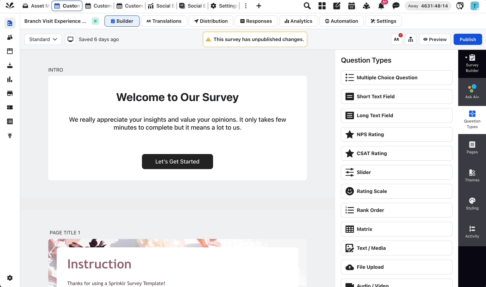

Device Switcher
A builder-level UX improvement for Sprinklr CFM Surveys, helping creators validate web, mobile, tablet, and custom survey layouts without leaving the authoring surface.

From alignment control to layout visibility
The initial product direction was to add mobile alignment controls in the right configuration panel. My recommendation expanded the solution into an in-builder device switcher, because creators did not just need one more setting; they needed to see how surveys rendered across web, mobile, tablet, and custom viewports while building.
The builder made desktop layout decisions easy, but mobile and tablet layout decisions were effectively blind.
Desktop-safe layouts broke on smaller screens
Media that looked balanced on desktop could appear awkward once compressed into a mobile survey format.
Creators could not optimize mobile presentation
Brands using product images, campaign visuals, or storytelling media had no mobile-specific alignment control.
Kiosk and tablet cases had no authoring confidence
Enterprise clients designing for specific device formats needed a reliable way to preview layouts against those surfaces.
02 · Current Journey
Every responsive layout decision required a detour
Leave builder
The creator stops configuring the question.
Go to preview
The mobile experience is checked in a separate view.
Switch device
The creator changes preview mode to mobile.
Map it back
The fix has to be remembered and translated into builder settings.
Return and iterate
The same loop repeats until the layout feels acceptable.
03 · Design Pivot
From a right-panel field to an authoring mode
Add mobile alignment controls
Rename the current control to Web Alignment and add Mobile Alignment below it in the Question -> Details panel, with top, between title and answer, and bottom placement options.
Add a device switcher in the builder top menu
Let creators switch between Web, Mobile, Tablet, and Custom viewports, resizing the canvas in real time without mutating survey configuration.
It solved the visibility problem
The switcher reduced preview friction, supported media-heavy surveys, and created a scalable foundation for future device-specific authoring needs.
04 · Interface Logic
Switch the builder across device views
Builder top menu
Web alignment
Device preview switcher
The stronger solution keeps creators in the builder while the survey canvas dynamically resizes and re-renders against the selected viewport.
prime
prime
How should this product delivery experience be shown to respondents?
The design exploration balanced usability value with rendering feasibility, release timelines, and engineering bandwidth.
Add mobile alignment in the right bar
A low-risk enhancement that addresses the core control gap within current technical and bandwidth constraints.
06 · Acceptance Criteria
What the design had to protect
Device toggle is accessible in the builder top menu across live, draft, template, and AI+ Builder surveys.
Web, Mobile, Tablet, and Custom modes resize the canvas correctly and re-render survey components responsively.
Width and height inputs support advanced preview scenarios with minimum and maximum validation limits.
Switching views must not change survey configuration, question logic, or saved respondent-facing behavior.
Web Alignment and Mobile Alignment persist through save, clone, duplicate, sandbox, and porting workflows.
New controls follow the same permissions already applied to the existing alignment switcher.
Outcome
A stronger preview model with a practical implementation path
Better authoring visibility
Creators can reason about web, mobile, tablet, and custom survey layouts without moving between separate surfaces.
More media control
Mobile media alignment can be configured independently while preserving existing desktop alignment behavior.
Enterprise-ready behavior
The concept supports live, draft, template, AI+ Builder, cloning, duplication, sandbox, and porting requirements.